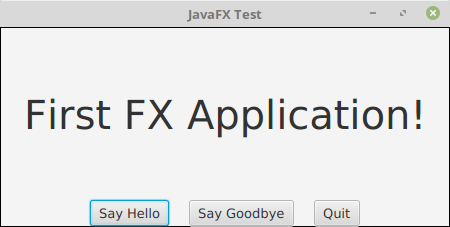
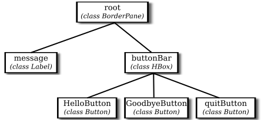

A Basic JavaFX Application
The command-line programs that you have learned how to write would seem very alien to most computer users. The style of interaction where the user and the computer take turns typing strings of text seems like something out of the early days of computing, although it was only in the mid 1980s that home computers with graphical user interfaces started to become available. Today, most people interact with their computers exclusively through a GUI. A GUI program offers a much richer type of user interface, where the user uses a mouse and keyboard (or other input devices) to interact with GUI components such as windows, menus, buttons, check boxes, text input boxes, scroll bars, and so on.
This section introduces some of the basic ideas of programming with JavaFX by looking at a very simple GUI application. ("Application" is the preferred term for "program" in this context.) The application simply displays a window containing a message and three buttons. Here's what the window looks like when it first opens:

Clicking "Say Hello" will get the computer to tell you, "Hello World!". Clicking "Say Goodbye" will change the text of the message to "Goodbye". Clicking the "Quit" button will end the application, which can also be ended by clicking the window's close box.
JavaFX Applications
A JavaFX program (or "application") is represented by an object of type Application, which is defined in the package javafx.application. Application is an abstract class, which defines, among other things, one abstract instance method, named start(). To create a JavaFX program, you need to create a class that extends Application and provides a definition for the start() method. (See Subsection 5.5.1 and Subsection 5.5.5.)
The class that you write to create a JavaFX application also typically includes a main() method that simply "launches" the application:
public static void main(String[] args) {
launch();
}(The call to launch() can be replace by launch(args) for an application that uses command-line arguments (Subsection 4.3.6), but the parameter is optional for all of the examples in this book.) When this main() routine is executed, the launch() method creates a new thread, called the JavaFX application thread. Recall from Section 1.2 that a thread can execute a sequence of instructions that can be run in parallel with other threads. It is important that anything that affects the GUI be done on the JavaFX application thread. That will be pretty much automatic for the things that we do in this chapter, but it's something that will become important when we cover threads in Chapter 12 and write some GUI programs that use several threads. The launch() method then creates the object that represents the application; that object is an instance of the class that contains the call to the launch() method. The start() method of that object is then called on the JavaFX application thread, and it is the responsibility of that start() method to set up the GUI and open a window on the screen.
Here, then is our first JavaFX application. We will spend the rest of this section discussing it:
import javafx.application.Application;
import javafx.scene.Scene;
import javafx.stage.Stage;
import javafx.application.Platform;
import javafx.scene.layout.BorderPane;
import javafx.scene.layout.HBox;
import javafx.geometry.Pos;
import javafx.scene.control.Label;
import javafx.scene.control.Button;
import javafx.scene.text.Font;
public class HelloWorldFX extends Application {
public void start(Stage stage) {
Label message = new Label("First FX Application!");
message.setFont( new Font(40) );
Button helloButton = new Button("Say Hello");
helloButton.setOnAction( evt -> message.setText("Hello World!") );
Button goodbyeButton = new Button("Say Goodbye");
goodbyeButton.setOnAction( evt -> message.setText("Goodbye!!") );
Button quitButton = new Button("Quit");
quitButton.setOnAction( evt -> Platform.exit() );
HBox buttonBar = new HBox( 20, helloButton, goodbyeButton, quitButton );
buttonBar.setAlignment(Pos.CENTER);
BorderPane root = new BorderPane();
root.setCenter(message);
root.setBottom(buttonBar);
Scene scene = new Scene(root, 450, 200);
stage.setScene(scene);
stage.setTitle("JavaFX Test");
stage.show();
} // end start();
public static void main(String[] args) {
launch(); // Run this Application.
}
} // end class HelloWorldFXThe first thing that you will notice is the large number of imports at the start of the program, all from subpackages of the javafx package. A typical JavaFX program uses many classes from such packages. When I discuss a JavaFX class for the first time, I will usually mention the package that it comes from. But in any case, you can look up the class in the JavaFX API documentation. As I write this, the documentation for JavaFX 17 can be be found at https://openjfx.io/javadoc/17/.
The HelloWorldFX program contains a main method to launch the application, and it contains the required start() method. Of course, we will often add other methods to our application classes, to be called by start(). There are also a couple other methods in Application that can be overridden. In particular, there is an init(), that will be called by the system before start(), and a stop() method that is called by the system when the application is shutting down. These two methods are defined in class Application to do nothing. A programmer can redefine init() to do some initialization and stop() to do cleanup. However, we will rarely if ever need them. Any initialization that we need can be done in start().
Stage, Scene, and SceneGraph
The start() method has a parameter of type Stage, from package javafx.stage. A Stage object represents a window on the computer's screen. The stage that is passed as a parameter to start() is constructed by the system. It represents the main window of a program, and is often referred to as the "primary stage." A program can create other windows by constructing new objects of type Stage.
A window is an area on the screen that can be filled with content. It can contain GUI components such as menus, buttons, and text input boxes, as well as drawing areas like those used in the graphical programs from Section 3.9. Although the primary stage is created before start() is called, the window does not have any content, and it is not yet visible on the screen. The start() method is responsible for adding content to the window and making it visible. The very last line of start() in the HelloWorldFX program, stage.show(), is what makes the window visible. The rest of the method creates content, adds the content to the window, and sets various configuration options for the content and for the window itself. For example, the line
stage.setTitle("JavaFX Test");sets the text that will appear in the title bar at the top of the window.
A stage shows a scene, which fills its content area and serves as a container for the GUI components in the window. A scene is represented by an object of type Scene. In the sample program, the statement
stage.setScene(scene);sets the scene that will be displayed in the content area of the stage.
A scene can be filled with things called GUI components, such as buttons and menu bars. Each component is represented by an object belonging to a JavaFX class. For example, a push button such as the "Say Hello" button in the sample program, is represented by an object belonging to the class Button, from the package javafx.scene.control. Some components, such as the object buttonBar of type HBox, are containers. A container represents a region in the window that can contain other components, including other containers. So, a window contains GUI components, inside containers, which can be inside bigger containers, each represented by an object. All of these objects make up something called the scene graph for the window. The scene graph shows the containment relationships among all the components in the scene. For the sample program, the scene graph looks like this:

Note that this is not a class hierarchy. It does not show the relationships among the classes of the objects in the program; rather, it is a containment hierarchy that shows how the components are contained within other components on the screen. In this scene graph, root and buttonBar are containers while message and the three buttons are simple components.
A scene contains a single "root" component, which is a container that contains all of the other components in the scene. In the sample program, the root component is named root (although of course that is not required), and the root of the scene is set when the Scene object is constructed:
Scene scene = new Scene(root, 450, 200);The numbers in this constructor specify the width and the height of the scene, in pixels. The numbers can be omitted, in which case the size will be computed based on the contents of the scene.
Nodes and Layout
Objects that can be part of a scene graph are referred to as nodes. Scene graph nodes must belong to one of the subclasses of javafx.scene.Node. Scene graph objects that can act as containers must belong to one of the subclasses of javafx.scene.Parent, which is a subclass of Node. The nodes that are contained in a parent are called children of that node. The root node in a scene graph must be a Parent.
The buttons in HelloWorldFX are represented by objects of type Button. The constructor that is used to create the button objects specifies the text that is displayed on the button. Similarly, message is a node of type Label, from package javafx.scene.control, whose purpose is simply to passively display a String. One of the properties of a Label object is a font, which specifies the size and style of the characters in the displayed string. The font for the text is set by calling the label's setFont() method. The Font constructor that is used in the sample program, new Font(40), takes a parameter that specifies the size of the font.
Containers are Nodes which can have other nodes as children. The act of arranging a container's children on the screen is referred to as layout. Layout means setting the size and location of the components inside the container. While it is possible for a program to set the sizes and locations directly, it is more commonly done automatically by the container. Different containers implement different layout policies. For example, an HBox is a container that simply arranges the components that it contains in a horizontal row. In the constructor
HBox buttonBar = new HBox( 20, helloButton, goodbyeButton, quitButton );the first parameter specifies the size of a gap that the HBox will place between its children, and the remaining parameters are nodes to be added as children of the container.
A BorderPane is a container that implements a completely different layout policy. A BorderPane can contain up to five components, one in the center of the pane and up to four more placed at the top, at the bottom, to the left, and to the right of the center. In the sample program, the root of the scene is a BorderPane and components are added in the pane's center and bottom positions with the statements
root.setCenter(message);
root.setBottom(buttonBar);Layout is configurable by a large number of options. The sample program has only one example of this,
buttonBar.setAlignment(Pos.CENTER);This command centers the buttons within the HBox; without it, they would be shoved over to the left edge of the window. Pos, short for "position," is an enumerated type (see Subsection 2.3.5). JavaFX uses many enumerated types for specifying various options.
Events and Event Handlers
In addition to setting up the physical layout of the window, the start() method configures event handling. In HelloWorldFX, an event occurs when the user clicks one of the buttons. The application must be configured to respond to, or "handle," these events. Handling an event involves two objects. The event itself is represented by an object that holds information about the event. For a button click, the event is of type ActionEvent, and the information that it carries is the button that was clicked. The second object is of type EventHandler, a functional interface that defines a method handle(evt), where the parameter, evt, is the event object. To program a response to an event, you can create a class that implements the EventHandler interface and provides a definition for the handle() method. However, since EventHandler is a functional interface, the handler can alternatively be specified as a lambda expression (see Section 4.5). Lambda expressions are very commonly used in JavaFX for writing event handlers, among other uses. For example, the lambda expression
evt -> message.setText("Hello World!")represents an event handler that responds to an event by changing the text of the message to read "Hello World!". The parameter, evt, is the ActionEvent object that represents the event. In this case, the parameter is not used in the response in any way, but it still has to be there to satisfy the syntax of the lambda expression: Since the function in the EventHandler interface has a parameter, the lambda expression must have a parameter to match the interface.
In addition to writing the event handler, you also have to register the handler with the object that will produce the event. In this case, the object is helloButton, and the handler is registered by calling the button's setOnAction() method:
helloButton.setOnAction( evt -> message.setText("Hello World!") );Handlers for each of the other two buttons are set up in a similar way. Remember that in each case, there is an object that generates the event in response to a user action, an object that represents the event, and an event handler that contains the code that is executed in response to the event. This diagram summarizes how it all works:
About all that still remains to be explained in the sample program is the response to a click on the "Quit" button: Platform.exit(). The static exit() method in the Platform class is the preferred way to programmatically end a JavaFX program. It is preferred to System.exit() because it cleanly shuts down the application thread and gives it an opportunity to clean up by calling the application's stop() method before terminating.
This section has been only a brief overview of JavaFX applications, but it has introduced many of the fundamental concepts. We will cover all of this in much greater detail in the following sections.